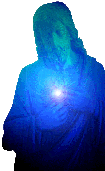

"TRATADO DAS REVELAÇÕES E VISÕES DO CÉU"
 Ele é muito longo e se compõem de 109 Visões que Francisca teve ao longo de dez
anos, de Julho de 1430 a Dezembro de 1439. È um decênio trabalhoso e crucial na
vida da Santa, por que nele viveu intensamente a fundação da "Tor de' Specchi"
(1433), mas também decisivo na história da Igreja, pelo conflito dramático
entre o Papa e os Padres do Concílio na Suíça, que iluminada pela luz de DEUS,
ajudou de maneira preponderante.
Ele é muito longo e se compõem de 109 Visões que Francisca teve ao longo de dez
anos, de Julho de 1430 a Dezembro de 1439. È um decênio trabalhoso e crucial na
vida da Santa, por que nele viveu intensamente a fundação da "Tor de' Specchi"
(1433), mas também decisivo na história da Igreja, pelo conflito dramático
entre o Papa e os Padres do Concílio na Suíça, que iluminada pela luz de DEUS,
ajudou de maneira preponderante.
Atendendo ao pedido de seu confessor, Padre Giovanni Mattiotti, a serva de CRISTO descreveu minuciosamente todas as Visões e os encontros com o SENHOR e a MÃE DE DEUS. Também, nestas Visões descreve a condição dos justos na existência após a morte, a vida dos Anjos e a glória e esplendor do Paraíso Divino.
VISÕES PARADISÍACAS
VISÃO Nº 14:
Participando da Santa Missa na Capela preferida, assim que recebeu o Santíssimo Corpo de CRISTO Sacramentado foi arrebatada em êxtase. Terminada a Santa Missa, ainda em êxtase, o pai espiritual pode presenciar a notável transformação ocorrida na sua expressão fisionômica, ficando a sua face visivelmente iluminada, e permanecendo assim em êxtase por quase uma hora. Voltando ao estado normal, por obediência ao pai espiritual, descreveu sua Visão. O seu espírito foi conduzido por uma luz brilhante a um local esplendidamente iluminado, repleto de infinitos tesouros. Estava naquele lugar NOSSO SENHOR SALVADOR na forma humana, com as cicatrizes de suas santíssimas chagas, das quais saiam admiráveis esplendores luminosos de tão considerável claridade que o seu espírito não podia fixar o olhar por muito tempo. Mas aquela claridade iluminava também todos os espíritos existentes no mesmo lugar, indescritivelmente felizes e com imensa alegria. Então, vi a SANTÍSSIMA MÃE DE DEUS sentada num magnífico trono, numa medida inferior ao trono de DEUS, seu FILHO. Estava coroada com uma tríplice coroa: a primeira precisamente por sua Virgindade; a segunda por sua Humildade e a terceira para revelar a sua Glória. E esta última funcionava como maravilhoso adorno da primeira. Aquela querida Rainha do Céu estava com a aparência inflamada de amor sempre olhando carinhosamente o seu diletíssimo JESUS, FILHO DE DEUS. Francisca confessa que estava entusiasmada com aquela admirável Visão e inflamada pelo Amor de DEUS, e vendo também, uma imensidão de tesouros estendidos ao redor do SENHOR teve o desejo de saber o significado. Então uma voz lhe respondeu: "DEUS é o tesouro e a gloria das almas, a alma venturosa alcança o precioso tesouro que é DEUS". A seguir, a Voz do SENHOR DEUS lhe falou: "EU Sou o Amor Eterno, que arrasto o coração favorito afastando-o de todos os bens terrenos, e o ensino a meditar mais alto e mais profundamente. Faço seduzi-lo, depois de observá-lo, e em minha observação faço transformá-lo totalmente. É plenificado com imensa caridade e depois de arder em amor celeste, imediatamente terá a maior consideração e assumirá ele mesmo, convidar todos a se inflamarem, como se permitisse unir integralmente a sua vontade com a Vontade Divina. O próprio sempre contemplará desejoso de ME abraçar. O seu amor alcançará o Meu CORAÇÃO".
A venturosa serva de CRISTO ouvindo aquela voz, ainda em êxtase, fez sinal com a cabeça afirmando concordar totalmente com a Vontade Divina, e se recomendava humildemente aos dois CORAÇÕES juntos, do Altíssimo CRIADOR e de sua SANTÍSSIMA MÃE. Logo que se retirou da Visão, o seu pai espiritual e Rita Covelli, sua filha espiritual em CRISTO, ouviram a sua narrativa. Entretanto, antes de deixarem a Igreja, numa última oração, aconteceu outro êxtase com duração de um quarto de hora, quando ela ouviu a voz de NOSSA SENHORA que disse: "A Alma que ignora o tesouro Divino, que é ingrata e não procura conhecer e, que não se faz submissa a Vontade de DEUS, não consegue a paz interior, embora satisfeita com os bens terrenos, cultivará a contradição, e só conseguirá contradizer as nossas palavras."
Esta Visão aconteceu no dia 30 de Setembro de 1431.
VISÃO Nº 15:
Depois de receber a Sagrada Comunhão naquela Capela, Francisca entrou em êxtase,
o qual teve a duração aproximada de 50 minutos. Respondendo as perguntas de seu
pai espiritual disse: veio uma grande luz que conduziu o meu espírito a outra
luz maior. E a seguir a luz foi conduzindo o meu espírito para um céu estrelado
e depois para um céu cristalino, e seguindo, o meu espírito foi conduzido para um céu
superior (empíreo), embora adiante ele fosse conduzido para um número
maior de outros céus.
aproximada de 50 minutos. Respondendo as perguntas de seu
pai espiritual disse: veio uma grande luz que conduziu o meu espírito a outra
luz maior. E a seguir a luz foi conduzindo o meu espírito para um céu estrelado
e depois para um céu cristalino, e seguindo, o meu espírito foi conduzido para um céu
superior (empíreo), embora adiante ele fosse conduzido para um número
maior de outros céus.
Seu pai espiritual a interrogou quanto àqueles céus estavam distantes um do outro, ela respondeu: o céu estrelado é totalmente cheio de claridade, pelo fato de aparecer azulado a nossa observação, com brilho cristalino que o torna mais resplandecente. O céu superior tem um esplendor indizível, superior aos outros céus. Disse: quanto ao céu ornado de estrelas tem tanta amplitude e magnitude que nenhum raciocínio humano consegue meditar sobre as suas dimensões e seu magnífico brilho cristalino. Porém o céu superior possui também uma grande e incrível dimensão. Disse ainda, o céu cristalino está mais afastado do céu semeado de estrelas como o céu estrelado está tão distante de nossos olhos na Terra. O céu superior está mais distante do cristalino do que o cristalino para o estrelado. Também interrogada pelo pai espiritual sobre as estrelas ela disse que algumas são maiores do que a Terra e outras são diferentes, ainda que para nós não apareça assim, a distancia de uma constelação a outra é muito grande.
Por outro lado, o espírito dessa humilde serva de CRISTO assim conduzido, viu e contemplou a Divina Majestade em seu excelso trono e JESUS NOSSO SALVADOR glorificado em Sua Humanidade. Das chagas saiam tão grande esplendor que lhe é impossível descrever. Embora das chagas das mãos e dos pés saíssem um indizível brilho, contudo aquela vasta luz que saía das mãos não era maior e nem mais esplendorosa que a luz incomparável irradiada pela chaga do lado. Todos aqueles raios de luz que saíam das santíssimas chagas se derramavam por toda a corte celeste, e todos os gloriosos espíritos, tanto angélicos como os humanos, se rejubilavam com muita alegria, dando louvores e indizíveis glórias ao SENHOR, mostrando CRISTO PANTOCRATOR, SENHOR do Universo e Redentor do Mundo.
Em outro trono inferior a aquele trono excelso estava à querida
MÃE DE DEUS coroada com a tríplice coroa. Embora, como dissemos, os raios
luminosos que saíam das chagas do SALVADOR eram lançados sobre todos os
espíritos que se alegravam imensamente, todavia de modo indizível envolvia
completamente a Rainha do Céu e seu esplendor brilhava admiravelmente, além
disso, alcançava imediatamente depois, mais ou menos, o resto dos espíritos,
isto de acordo com o mérito de cada um. Viu ainda que os raios luminosos que
saíam das Santíssimas Chagas do SALVADOR não só se irradiavam sobre os 
Francisca também viu que os raios luminosos enviados pelo misericordiosissimo e begníssimo NOSSO SENHOR JESUS CRISTO, eram as suas graças, também derramadas para todo o mundo. Contudo muitos da humanidade são indiferentes, não se interessam e desdenham as graças do SENHOR. Todavia a Bondade do SENHOR continua a derramar graças, incessantemente, para a conversão do coração, o bem de todos e harmonia da vida no mundo.
Continuando a sua narrativa, Francisca disse que o seu espírito estava contemplando a santíssima chaga do lado no SALVADOR, com indizível alegria e júbilo, quando percebeu com admiração o maravilhoso e tranquilo mar de luz que se descortinava da gloriosíssima chaga, cuja maior distancia na sua extremidade final seguramente não via, mas que estava num abismo.
Sobretudo, estando no mencionado espaço beatífico, de tanto ver e pensar ouviu uma suavíssima voz dizendo: "EU Sou o Amor fiel, que ponho a alma na verdade"...
Esta Visão aconteceu no dia 1º de Novembro de 1430.
VISÃO Nº 34: (PENTECOSTES)
 Nesta época Francisca estava impedida
de andar, e então, no Domingo, não podia ir a Santa Missa para receber o Sagrado
Corpo Sacramentado do SENHOR. Mas ouvia os cantos, de seu pequeno quarto na
parte superior da casa, onde habitualmente rezava e dava espaço às sagradas
meditações. Claudicando e não podendo curvar o joelho, viu uma grande chama
brilhante do amor Divino que conduziu o seu espírito para uma poderosa luz que
emanava daquele Anjo que lhe foi enviado para servir, conforme mencionamos. E
aquela luz incandescente conduziu o seu espírito para outra luz maior e mais
luzidia, onde viu a gloriosíssima Rainha do Céu coroada com um lindíssimo
diadema de ouro e pedras preciosas, estando presentes inumeráveis e gloriosos
espíritos angélicos e humanos, cantando maravilhosas e suavíssimas melodias.
Nesta época Francisca estava impedida
de andar, e então, no Domingo, não podia ir a Santa Missa para receber o Sagrado
Corpo Sacramentado do SENHOR. Mas ouvia os cantos, de seu pequeno quarto na
parte superior da casa, onde habitualmente rezava e dava espaço às sagradas
meditações. Claudicando e não podendo curvar o joelho, viu uma grande chama
brilhante do amor Divino que conduziu o seu espírito para uma poderosa luz que
emanava daquele Anjo que lhe foi enviado para servir, conforme mencionamos. E
aquela luz incandescente conduziu o seu espírito para outra luz maior e mais
luzidia, onde viu a gloriosíssima Rainha do Céu coroada com um lindíssimo
diadema de ouro e pedras preciosas, estando presentes inumeráveis e gloriosos
espíritos angélicos e humanos, cantando maravilhosas e suavíssimas melodias.
A seguir o seu espírito foi separado dos outros gloriosos espíritos e colocado como um peregrino visitante num lugar, onde viu um magnífico trono todo enfeitado e circundado por incontáveis esplendores com admirável zelo. No trono havia letras escritas, as quais certamente maravilhosas estavam num outro idioma. Das letras saíam um brilho e embora fosse diferente aquele idioma, todas as pessoas estavam estimuladas e comovidas, motivadas também pela alegria das outras excitações. As letras formavam este texto: "Amor, para quem EU Amo. Amor que ME honra, Amor a MIM dedicado, sinceramente devotado a MIM. Diante de tudo (no mundo) ele é colocado em diferentes lugares, onde o espírito está livre. Consagrando a MIM vocês ME dão uma profunda consolação. EU vos prometo Amor, por que dá consolo, estimula a perseverança e é refúgio para tudo, quando estão livres (o coração está livre). Sempre fostes preparados com todo o MEU querer e graças a MINHA boa amizade fostes um COMIGO e fostes escrito no Livro da Vida. Agora coloco naquele lugar bem marcado (no coração), o verdadeiro estimulo e a compreensão ao MEU Amor, que depois os conduzirá a pátria celeste. Aqueles que forem fieis sempre recordarão do MEU Amor eterno: agora, alegria a todo o momento por que existe Amor em quantidade e para todos".
Disse também aquela serva do SENHOR, não só no dia de Pentecostes, quando os Apóstolos e os Discípulos receberam graças derramadas pelo ESPÍRITO SANTO, mas corretamente ELE continua a derramar suas graças em qualquer lugar do mundo em qualquer dia ou hora, a todas as almas justas. Entretanto, conforme a capacidade de cada pessoa, isto é, conforme ela esteja mais ou menos em "estado de graça".
Naquele mesmo dia, o seu espírito foi conduzido por uma luz esplendida para dentro de outra luz imensa, esplendorosa, e nesta fulgurante luz viu um trono maravilhoso todo ornado admiravelmente por infinitos tesouros. E no trono havia o letreiro: "Princípio sem fim". Daquele trono ouviu uma voz dizendo: "Ame, ó alma, o teu SENHOR, ame Aquele que tanto te ama. Do Céu desceu a Terra como teu servo. O ódio que existe no mundo é vitória do dragão. Ame o próprio Amor, para embelezar a carne humana que te veste. Tanto te amou que Teu Sangue foi derramado para que tu tenhas uma existência fiel e feliz. Siga aquele caminho que te ilumina, e por tal rota deve caminhar em ordem de sempre amar. Quer subir aos Céus e descobrir o ardor Divino? O próprio Amor te ensina como trabalhar com grande fervor. Usufrua as dádivas do tempo de trabalho de maneira responsavelmente. Seja humilde, doce e despojado de toda vaidade, competente em obediência para permitir sempre rapidamente um amor fervoroso a DEUS, invocando-O de modo a ter êxito em teus empreendimentos. A justa medida é se deixar transformar e se inflamar no Divino Amor. Olhe sempre para o seu DEUS Altíssimo e o seu nobre Amor. Este perseverará sempre, sem influência dos olhares e das coisas. Gozar agradavelmente do sabor da eternidade, é a garantia que recebe do Amor, que te inflama no ardor de DEUS. Então, ame o SENHOR, e ELE te amará eternamente. ELE mesmo te conduzirá com imenso júbilo nesta grande transformação, te colocando neste maravilhoso abismo muitíssimo inflamado de Amor. E sempre deverá permanecer com esta mesma vontade, principalmente para fortalecer a sua alma e viver sem temor. Vivendo e morrendo na altitude (cultivando a santidade por amor a DEUS), com o pensamento e o coração em DEUS, não tomando conhecimento de sua imagem pessoal, por que o Amor Divino é tão grande e profundo que envolverá a sua existência".
Esta Visão aconteceu no dia 8 de Junho de 1432, solenidade de Pentecostes.
VISÃO Nº 61- (Francisca fala do Paraíso. Seu guia foi o Apóstolo São Paulo):
Aquela serva devota de DEUS, depois de receber o preciosíssimo sacramento (o Sagrado Corpo do SENHOR Sacramentado), naquela Capela, entrou em êxtase. Logo lhe apareceu Santa Madalena e disse: "O alma, que te privaste do teu próprio desejo e quiseste servir vigorosamente o Altíssimo CRIADOR, abandonando todas as tuas vontades, e de todos os modos queres colocar o teu zelo neste grande abismo secreto, por conseguinte, deve contentar o próprio amor com todas as coisas agradáveis, em todas e por todos, deves tributar honra a DEUS. Seja sempre consistente e firme, não queira se desviar do caminho, sendo suficiente a todas as almas, e conhecendo, tome cuidado com todas as ciladas do inimigo, seja sempre submissa e adormeça neste ardor. Alma, estes cuidados são necessários e descanse no Amor de DEUS, e depois, nesta água corrente será transformada num abismo de amor, evidentemente no Amor de JESUS CRISTO, fazendo que sejas fiel e sempre autêntica, te renovando na celeste caridade que te fará arder de amor. A alma que é fiel será inflamada de tanto ardor e será renovada neste grande abismo de amor. E deste modo, a alma renovada será reverente ao dulcíssimo SENHOR. Prepare-se para reverenciar no Céu a Divindade, que dá beleza a alma. E esta formosura permite modelar a alma para ela ser sempre nova e bela, sem nenhum defeito. A alma sem defeito é trabalho da virtude de DEUS. Quanto mais humilde ela for, tanto mais alto será elevada. Por outro lado, a própria virtude de DEUS transforma todo o ambiente celeste, não deixando entrar a visão das trevas, por que todo esplendor da luz supri e satisfaz todas as necessidades. Então, se reconciliando com a Vontade de DEUS, seja firme e proceda com coragem, abandonando os seus próprios desejos, por que o SENHOR te escolherá num próprio noivado".
E logo depois é acompanhada em êxtase visitando todos os lugares do Paraíso Celeste. E naquela visão beatífica ouviu as palavras: "O glorioso Apóstolo Paulo está lhe conduzindo na festa de hoje, da parte do Redentor e CRIADOR e da SANTÍSSIMA TRINDADE, que é só Amor. Quanto ao fato, a festa da SANTÍSSIMA TRINDADE celebra aquela santíssima união, que acendeu o fogo do amor e da graça em plena e total abundância no Coração Divino. E assim, grande deve ser o respeito por aquele fogo amoroso, que se revela tão ativo como naquele abismo do rio, e assim, no brilho da Divindade. Por que foi com grande ardor que o Verbo Divino desceu e inflamou toda a humanidade, e permaneceu entre nós, em espírito e verdade, e com seu infinito Amor Divinizou a humanidade. Três Pessoas Divinas numa Única e com a mesma Essência, e, a saber, a Essência é incomensurável e todas as Três com perfeita noção de tudo, e com idêntico poder, com a mesma sabedoria, e por Sua infinita misericórdia seus servos se encantam com seu Imenso Amor. Como um abismo de um grande rio, distribui ardores inflamados, que se transformam numa infinita felicidade pela graça do amor, conservando todos os santos espíritos, saciando e colocando em ordem os espíritos angélicos, os quais inflamados e com puro amor, são mantidos e governados. Pois os espíritos seráficos, aqueles que estão nos três Coros Hierárquicos mais próximos do trono de DEUS, assim como qualquer daqueles nove Coros, todos eles possuem suas residências e são governados pela vontade do SENHOR".
Francisca repetiu ao seu pai espiritual as palavras de São Paulo, dizendo: Existem verdadeiramente três Patriarcas em algum lugar. Primeiro está Abraão, em segundo Isaac e em terceiro Jacó. Outros Patriarcas além destes três existem nos Coros, a saber, conforme semelhantemente a justa medida de sua capacidade no conhecimento de DEUS. Em primeiro está o glorioso João Batista, que segura uma bandeira de amor vitoriosa (pelo seu martírio), e precisamente todos os outros seguem o mesmo caminho, conforme revelaram progressos para amar. Os Profetas estão na primeira residência do primeiro Coro, e também no segundo e terceiro. Na segunda residência do primeiro e segundo Coro estão os gloriosos Apóstolos, mas na segunda residência do primeiro Coro está São Pedro, São Paulo e Jacob Zebedeu. A digníssima Rainha do Céu está no primeiro Coro, superior a todos os espíritos angélicos e humanos. Em residências abaixo, neste primeiro Coro, estão espíritos humanos, contudo não em grande número, existem lugares vagos na expectativa da chegada de espíritos merecedores que vivem na Terra, e que estão escritos no livro da vida, e do mesmo modo, também outros espíritos, que ainda estão para nascer.
É incontável o número de Anjos, mas, embora sejam numerosos, eles são determinados nas visões Divinas e na compreensão e discernimento dos espíritos humanos, de modo que geralmente são os mesmo Anjos observados nas Visões. Assim também em segredo Divino aqueles espíritos humanos são observados tanto os que buscam a salvação, como aqueles de procedimento condenável. Mas aqueles espíritos que no tempo futuro devem ser salvos ou condenados, permanecem ocultos e indulgentes no Coração Divino, e isso, por causa do "Livre Arbítrio" que DEUS concedeu a todas as almas. Assim, os atos Divinos permanecem intactos, respeitando evidentemente a presciência Divina da salvação ou da condenação, por que somente DEUS conhece o presente, o passado e o futuro, e por outro lado, as almas permanecem do mesmo modo independentes, com total liberdade de pensamento, movimento e ação.
Por último, o glorioso Apóstolo disse para os sacerdotes: "Não queiram por fim na bondade e misericórdia Divina, que é infinita, mas sempre em teu segredo e no teu coração tenham e guardem o conselho e a fé, e a indubitável esperança, por que sempre cheia de pleno encanto, deve permiti-la a conduzi-lo e a reconduzi-lo no caminho do direito. E sempre confiando no SENHOR, que tudo faz, bem feito, por que sua graça dá aparência à humanidade de acordo com a Sua Vontade. Pois, em sua bondade, sempre envia todas as coisas, ELE faz ou permite sempre deixando as pessoas satisfeitas, e sua obra conduz não só ao bom caminho, mas conduz de maneira excelente o próprio trabalho e os empreendimentos, e em seu consentimento, vê mais amplo e mais longe, e conhece na medida o que pode ser permitido. Disse também o glorioso Apóstolo São Paulo, que sejam vigorosos e sempre permaneçam na graça de DEUS, dando glórias e louvores a ELE, alegrando-se sempre com ELE e NELE, e se afastando das coisas irrefletidas, por isso mesmo, não assumindo o direito de julgar a Obra de DEUS conforme a sua maneira de ver, mas conforme o beneplácito Divino". Esta Visão aconteceu no dia 23 do Mês de Junho de 1433
VISÃO Nº 1:
 Francisca
descreveu ao seu pai espiritual: Certo dia, com a alma
dirigida a DEUS, enlevada pelas orações e santas meditações, surgiram vinte e
seis espíritos malignos que me injuriaram e me lançaram terríveis insultos, e se
preparavam para arremessar fogo sobre a cidade, dizendo: "Isto é a ira de DEUS que envia fogo sobre a cidade
de Roma por causa dos abomináveis pecados do povo. Dois de nós, a começar por
qualquer região, serão os executores do castigo Divino, sufocando e destruindo a
cidade". Para grande
angústia e inquietação da alma da serva de CRISTO, os demônios se consideravam
incumbidos de punir o povo e destruir a cidade. Continuando suas orações com fé e
confiança, a graça Divina se manifestou. O SALVADOR surgiu no espaço brilhando com
tão intenso esplendor, que os falsos emissários Divino reconheceram. Para completar
o consolo da serva de CRISTO, teve a Visão não dos falsos julgadores, mas a imagem da
verdadeira MÃE DE DEUS coroada, tendo o MENINO JESUS aos braços, o bem aventurado João
Batista e os gloriosos apóstolos Pedro e Paulo, que de joelhos, suplicavam ao SENHOR
em benefício das almas corretas e liberação da cidade. Então Francisca ouviu uma
suavíssima voz, dizendo: "O excelso
e misericordioso SENHOR, se inclinou aceitar as súplicas dos Santos e da bem-aventurada
VIRGEM MARIA, retrocedendo a sentença contra a cidade, mas se eles não se corrigirem
graves penas inesperadas acontecerão". Como sinal, imediatamente três diabos lançaram flechas de fogo: a primeira
sobre a torre da Basílica de São Paulo, a segunda sobre a torre da Basílica de São
Pedro e a terceira sobre a Capela do SENHOR na Basílica de São João de Latrão.
Isto ocorreu no mês de Julho do ano do SENHOR de 1430.
Francisca
descreveu ao seu pai espiritual: Certo dia, com a alma
dirigida a DEUS, enlevada pelas orações e santas meditações, surgiram vinte e
seis espíritos malignos que me injuriaram e me lançaram terríveis insultos, e se
preparavam para arremessar fogo sobre a cidade, dizendo: "Isto é a ira de DEUS que envia fogo sobre a cidade
de Roma por causa dos abomináveis pecados do povo. Dois de nós, a começar por
qualquer região, serão os executores do castigo Divino, sufocando e destruindo a
cidade". Para grande
angústia e inquietação da alma da serva de CRISTO, os demônios se consideravam
incumbidos de punir o povo e destruir a cidade. Continuando suas orações com fé e
confiança, a graça Divina se manifestou. O SALVADOR surgiu no espaço brilhando com
tão intenso esplendor, que os falsos emissários Divino reconheceram. Para completar
o consolo da serva de CRISTO, teve a Visão não dos falsos julgadores, mas a imagem da
verdadeira MÃE DE DEUS coroada, tendo o MENINO JESUS aos braços, o bem aventurado João
Batista e os gloriosos apóstolos Pedro e Paulo, que de joelhos, suplicavam ao SENHOR
em benefício das almas corretas e liberação da cidade. Então Francisca ouviu uma
suavíssima voz, dizendo: "O excelso
e misericordioso SENHOR, se inclinou aceitar as súplicas dos Santos e da bem-aventurada
VIRGEM MARIA, retrocedendo a sentença contra a cidade, mas se eles não se corrigirem
graves penas inesperadas acontecerão". Como sinal, imediatamente três diabos lançaram flechas de fogo: a primeira
sobre a torre da Basílica de São Paulo, a segunda sobre a torre da Basílica de São
Pedro e a terceira sobre a Capela do SENHOR na Basílica de São João de Latrão.
Isto ocorreu no mês de Julho do ano do SENHOR de 1430.
Visão Nº 9:
Depois das orações na Capela e recebendo o Santíssimo Sacramento, a serva de CRISTO entrou em êxtase, permanecendo imóvel pelo espaço de uma hora. Depois retornando ao natural, por obediência ao pai espiritual que a interrogou sobre a visão, respondeu que seu espírito foi conduzido por uma grande luz, em direção a outra maior, onde estava um lindo tabernaculo, próximo a um pequeno tamborete. Em cima do tabernaculo estava um cordeiro com uma candura incomparável, e diante dele três admiráveis cordeiros branco como a neve, alegres e cheios de graça. Juntos atravessaram diante do Cordeiro, humildes e agradecidos fazendo uma profunda reverencia, e assim, cada qual passou, recebendo o seu tamborete.
Aqueles ardorosos espíritos permaneceram com muita alegria durante uma hora, mantendo o corpo sempre imóvel, naquele lugar e ouviram uma suavíssima voz dizendo: "EU sou aquele AMOR, que dou frutos perfumados nesta pátria. Toda alma que sentir este perfume, sentirá gosto por ele, e então, a grandeza do perfume do MEU Amor fará a alma renunciar a tudo na terra e arder em fervoroso amor por MIM. Por isso, depois que ela renunciar, sempre lastimará as coisas que fez. Pensará em ser acessível e de se fazer insignificante, renegando a sua própria vontade; desejará examinar e observar tudo, apelando ao martírio e se submetendo a obediência, de modo a poder se unir Aquele de Quem se encantou". Retornando do êxtase, o seu pai espiritual e sua filha em CRISTO, Rita Covelli, ouviram estas palavras: "Contigo desejo estar, nem deste lugar proponho me afastar. Pessoa convidada, não deve se violentar. Agora que ela tem, porque se faz como se não tivesse? Não quero mais me demorar, não tenho preguiça e nem temo qualquer perigo. Quero permanecer Contigo e nunca Ti abandonar. Tu és o ESPÍRITO CRIADOR e tens tudo para oferecer com amor. E assim, não quero e nem sei como me ocultar". Entrando novamente em êxtase, ouviu uma voz que disse: "Quem tem sede, venha e beba".
E então, aquele cordeiro branquíssimo volveu o seu peito para o outro cordeiro com um aspecto bom e gracioso, e fez sinal com a cabeça para ele vir e beber numa grande chaga em seu peito. O cordeiro, com a fisionomia tranquila, para aquela grande chaga correu e bebeu, e também esta alma devota de DEUS foi conduzida para aquela chaga profundíssima e de onde viu um mar de luz infinita, e não satisfeita só de beber, pois desejava entrar lá dentro, se lhe fosse permitido, mas foi impedida por que ignorava. Mas quando perspicazmente contemplou, vendo um mar de luz tão mais profundo, com maior atenção e paixão, desejou caminhar para lá. E assim, ouviu uma voz dizendo: "EU Sou uma Ilha de Amor, que em alta voz digo: Quem tem sede, venha e beba. E chegando para querer se saciar, abra o Meu Coração, de modo que possa ser recebido como hóspede".
Esta Visão aconteceu no dia 22 de Julho de 1431, festa da Bem-aventurada Maria Madalena.
Visão Nº 13:
 Em outra ocasião,
a humilde serva de CRISTO rezando na Capela do Santo Anjo, na
Igreja de Santa Maria em Trastevere, depois de receber a Sagrada Comunhão foi
arrebatada em êxtase. Então, sua fisionomia revelou um grande jubilo,
ostentando imensa alegria, e ainda, fazendo gestos e modos iguais à de uma
mulher que tivesse em seus braços uma pequena criança. O braço segurava
apertadíssimo ao peito, movendo a criança de lá para cá, mostrando-se muito
contente com aquele preciosíssimo tesouro em seus braços, olhando-o com
frequência e contemplando-o carinhosamente. E assim ficou pelo espaço de
aproximadamente meia hora.
Em outra ocasião,
a humilde serva de CRISTO rezando na Capela do Santo Anjo, na
Igreja de Santa Maria em Trastevere, depois de receber a Sagrada Comunhão foi
arrebatada em êxtase. Então, sua fisionomia revelou um grande jubilo,
ostentando imensa alegria, e ainda, fazendo gestos e modos iguais à de uma
mulher que tivesse em seus braços uma pequena criança. O braço segurava
apertadíssimo ao peito, movendo a criança de lá para cá, mostrando-se muito
contente com aquele preciosíssimo tesouro em seus braços, olhando-o com
frequência e contemplando-o carinhosamente. E assim ficou pelo espaço de
aproximadamente meia hora.
Voltando ao seu estado normal, o pai espiritual lhe interrogou a respeito da Visão e por obediência Francisca respondeu: "Vi uma Hóstia grande lindíssima da cor semelhante a uma imensa quantidade de neve branquíssima. Fiquei contemplando atentamente, e neste momento, certa luz claríssima conduziu o meu espírito a um céu cristalino. Depois fui conduzida a outra luz maior, na qual estavam muitos espíritos angélicos, que ela ficou impedida de fixar o olhar e examinar, porque a luminosidade era muito grande e ela não estava habituada a uma luz tão intensa, semelhante à luz solar, isto por que, todos brilhavam com magnificência, cheios de luz, transparentes embora visíveis, e eram brilhantes e ardorosos. Naquela luz imensa estava a celeste RAINHA, com o FILHO DE DEUS em seus braços, agora, na sua humanidade, muito pequeno com quase oito meses de vida. A luz que emanava da MÃE DE DEUS era mais brilhante e muito mais intensa, do que aquela onde os espíritos angélicos estavam. E naquele ambiente celeste apareceu outra suntuosa e inestimável luz, vinda de DEUS que deslocou o FILHO, o MENINO JESUS, dos braços da MÃE para os meus braços. Minha emoção foi indescritível, por que não encontro palavras carinhosas e cheias de ternura, para descrever a imensa alegria de meus sentimentos". Esta Visão aconteceu no dia da Festa da Natividade da VIRGEM MARIA, 8 de Setembro de 1431.